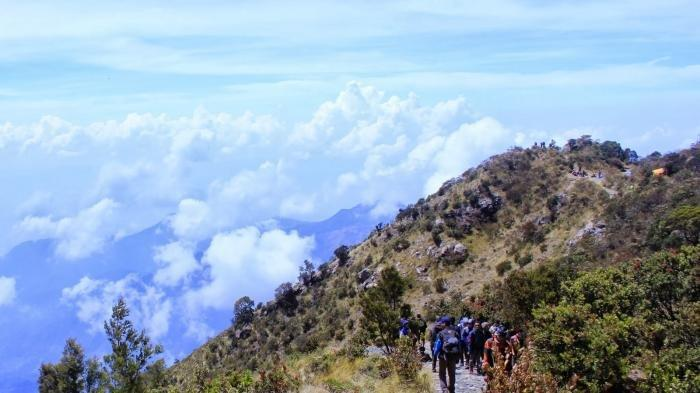

Gunung Lawu
Gunung Lawu terletak di antara tiga kabupaten yaitu Kabupaten Karanganyar, Jawa Tengah, Kabupaten Ngawi, dan Kabupaten Magetan, Jawa Timur. Status gunung ini adalah gunung api "istirahat" (diperkirakan terahkir meletus pada tanggal 28 November 1885[3][4]) dan telah lama tidak aktif, terlihat dari rapatnya vegetasi serta puncaknya yang tererosi. Di lerengnya terdapat kepundan kecil yang masih mengeluarkan uap air (fumarol) dan belerang (solfatara). Gunung Lawu mempunyai kawasan hutan Dipterokarp Bukit, hutan Dipterokarp Atas, hutan Montane, dan hutan Ericaceous. Gunung Lawu adalah sumber inspirasi dari nama kereta api Argo Lawu, kereta api eksekutif yang melayani Solo Balapan-Gambir.
Gunung Lawu memiliki tiga puncak, yakni Hargo Dalem, Hargo Dumiling, dan puncak tertinggi bernama Hargo Di lereng gunung ini terdapat sejumlah tempat yang populer sebagai tujuan wisata, terutama di daerah Tawangmangu, Cemorosewu, dan Sarangan. Agak ke bawah, di sisi barat terdapat dua komplek percandian dari masa akhir Majapahit: Candi Sukuh dan Candi Cetho. Di kaki gunung ini juga terletak komplek pemakaman kerabat Praja Mangkunagaran: Astana Girilayu dan Astana Mangadeg. Di dekat komplek ini terletak Astana Giribangun, mausoleum untuk keluarga presiden kedua Indonesia, Soeharto.
Meskipun ketiga jalur pendakian tersebut sudah dikenal secara umum oleh kalangan awam para pendaki yang ingin mendaki Gunung Lawu, sebenarnya terdapat satu jalur pendakian lain yang memiliki keunikannya tersendiri. Jalur pendakian tersebut adalah Jalur Pendakian Klasik Gunung Lawu via Singolangu. Jalur pendakian ini berada di Singolangu, Kelurahan Sarangan, Kecamatan Plaosan, Kabupaten Magetan, Jawa Timur, atau sekitar 3 km dari Telaga Sarangan. Sesuai dengan namanya, jalur pendakian ini diyakini sebagai jalur pendakian tertua diantara semua jalur pendakian Gunung Lawu. Selain itu, jalur ini juga diyakini sebagai napak tilas Prabu Brawijaya V saat pergi ke Gunung Lawu untuk menghindari kejaran pasukan Raden Fatah. Di sepanjang jalur pendakian ini nantinya para pendaki akan menemukan beberapa situs yang diyakini sebagai petilasan Prabu Brawijaya V. Adanya situs-situs petilasan tersebut semakin membuktikan bahwa jalur ini merupakan jalur pendakian tertua dan sudah ada sejak lama.Pendakian melalui Jalur Klasik via Singolangu akan melalui 5 pos, yakni Pos 1 Kerun-Kerun, Pos 2 Banyu Urip, Pos 3 Cemaran, Pos 4 Taman Edelweis, dan Pos 5 Cokro Paningalan.
Untuk lebih lengkapnya mengenai Gunung Lawu, silahkan buka: About us
Adapun untuk lebih jelasnya mengenai Letak Geografis, Dapat dibuka: Geografis
| GUNUNG LAWU |
| 
|
Titik Tertinggi
Ketinggian 3265 m (10712 ft).
Puncak 3118 m (10230 ft) |
Letak
Kabupaten Karanganyar, Jawa Tengah
dan Kabupaten Magetan, Kabupaten Ngawi Jawa Timur, Indonesia. |
Geologi:
Jenis Gunung: Stratovolcano.
Letusan terakhir 28 November 1885 |
| Info Pendakian:
Peta Pendakian >>> |